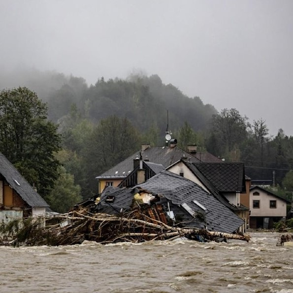

Europa central sufre la mayor inundación en más de 20 años

El lento paso del organismo meteorológico provocó decenas de muertes
y el desalojo de miles de personas.
La Organización Mundial de la Salud alertó sobre la situación en varias
zonas de Europa central durante la peor inundación en más de 20 años,
provocada por la tormenta Boris.
Según comunicó el organismo, el lento paso del organismo meteorológico
provocó decenas de muertes y el desalojo de miles de personas.
En Austria, Chequia, Alemania, Hungría, Polonia, Rumania y Eslovaquia,
los ministerios pertinentes implementaron esfuerzos de preparación, respuesta,
rescate y recuperación.
Hasta ahora, en esta región las inundaciones resultan el peligro natural más común,
con emergencias, daños, trastornos y efectos adversos de gran magnitud, en particular
por las enfermedades trasmitidas por el agua.
De acuerdo con los expertos, la crisis climática tiene un impacto cada vez mayor, e
influye en la intensidad de los fenómenos meteorológicos.
La magnitud de la catástrofe actual, subrayaron, es otro recordatorio de la urgente
necesidad de trabajar conjuntamente para combatir los problemas medioambientales.